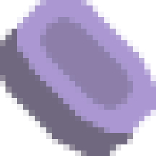

Basics
The goal of the game is to not die! You die when your core reaches 0 health. This is your core:

Start by getting ore. Copper should be priority #1, for you only need copper to build the first drill tier and conveyors.
- Mine with your Mech (see this)
- Mine with a drill (you start with 0 copper, so you will need to get 45 copper to get your first drill + conveyors)
- Let your spirit drone mine Copper for you (see Spirit Drone on this page)
Once you have a good Copper income, you can mine Lead. Lead can be mined with the tier 1 drill as well.
After lead, Dense Alloy should be produced. Please see Advanced Concepts for the materials processing of Dense Alloy, Silicone, Titanium, Thorium, Plastanium, Phase Fabric, and Surge Alloy.
Input / Output Basics
Here are a few basics / tips to understanding block input/output behaviors.
1. Conveyors moving away from a production block will be output.

This drill will mine and put ore on all conveyors that take the ore away from the drill. In this example, the drill will put Lead on all 7 conveyors, but not the eight one because that conveyor moves towards the drill. The drill will prioritize each path evenly. If a path is blocked, it is not considered as an output.
Notice that a conveyor moving into the Core deposits the material into the core inventory. Once a material is in the Core inventory, you can use it to build immediately, regardless of location.
2. Conveyors moving towards a block will be an input for the block (only if applicable).

In this example, a Smelter is turning 2 Lead, 1 Copper , and 1 Coal into 1 Dense Alloy
, and 1 Coal into 1 Dense Alloy . The Smelter is smart enough to know that the belts moving towards the Smelter are inputs and the one conveyor moving away is the output.
. The Smelter is smart enough to know that the belts moving towards the Smelter are inputs and the one conveyor moving away is the output.
A block that takes materials as inputs will not accept any materials that it cannot utilize.
Here is a quick summary of inputs and outputs.

A GREEN arrow is an input. A RED arrow is a possible output.
Any conveyor facing towards the block will be considered an input. Any conveyor facing away from the block is considered an output. This doesn't make much sense for a drill, since drills cannot take any solid item inputs. But this will apply for other crafting blocks which will be covered later. (This concept also applies for liquids, also covered later)
3. Blocks that output can directly place into other blocks.

This last example is a Pneumatic Drill mining stone and using a Pulverizer to turn it into sand. A pulverizer turns stone into sand by using power. Notice the drill does not use any conveyors; the stone goes directly into the pulverizer.
Please note that touching blocks are considered outputs and will be the same output priority as a conveyor or other blocks.
Mech Mining
If you do not start near copper patches, it might be difficult to begin your game. Having copper income is the very first thing you need to set up, because all drills and conveyors use copper.
To mine, tap on a single ore square. The mech will start mining with a laser. You will see ore flying out of the patch.

If a mine (any ore square) is close enough to your core, the items will automatically fly right to the core. If a mine is not close enough, the mined ore will fly onto your mech. There is not a good way to determine how much ore your mech is carrying, but your mech will stop mining once it is full. You will also notice that your mech is much slower than before.
You can only hold one type of material at a time.
To drop off the mined ore or current mech inventory, on mobile, tap and hold on a spot near your mech. On desktop, drag from your mech to the recipient. A small icon (a circle with the ore icon) will appear. The recipient block will display its outline if it can accept the item. Drag this over the core to deposit it in the core inventory. Drag it into any block which accepts the item to drop it off in the block. Drag it to an empty space to discard it.

You can pick things off of a conveyor. Click on the conveyor. The conveyor contents will show up. Tap/click on the icon to pick it off the belt and add it to your mech's inventory. This is very useful when there is one item blocking the path due to a contamination or error. You can also take items out of any block that accepts or produces items.

In the above example, the Smelter cannot produce Dense Alloy because it lacks Copper. Why? Because the conveyor has 1 Titanium, which the Smelter cannot accept, thus, it backs up the rest of the conveyor.
Spirit Drone

A single spirit drone will spawn for you. This and other drones will mine, help build, and repair blocks. If the spirit drone originating from your core dies, a new one will spawn from the core shortly.
You cannot control what drones do. The drones' priorities go as follows:
Mine Ores > Assist in building > Repair blocks
While building, drones will stop assisting and quickly mine ores that are running out.
Tips and Tricks
- You can confirm a block, cancel the build (this will stop your mech from building, but the confirmed build will remain) and continue this one block a time to set up a large queue. This can be helpful when you want to get something started, but need to address something else first. Drones will not work on these queues, so this is only a placeholder.
- Containers making contact with your Core will act like extra inventory for your Core. This not only gives more inventory space, but allows for more space to input raw materials, as well as output raw materials from your inventory (See Unloader) An Unloader will take materials out of both the Core or connected Containers because they now share the same inventory space.